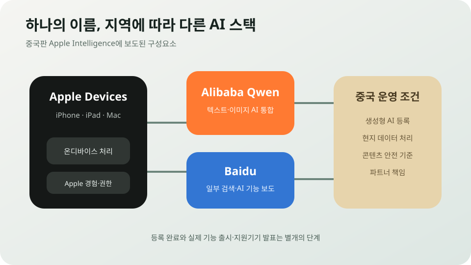

Apple Intelligence 중국 등록: Qwen·Baidu와 만드는 별도의 Apple AI
중국 인터넷 규제당국이 iPhone용 Apple Intelligence의 생성형 AI 서비스를 등록 목록에 올렸다. Alibaba는 Qwen이 중국 사용자의 iOS, iPadOS, macOS, visionOS 경험에 통합된다고 확인했고, Baidu도 일부 기능의 파트너로 보도됐다. 이는 미국에서 쓰는 Apple AI를 그대로 중국에 여는 것이 아니라, Apple의 기기 경험 위에 중국 모델과 현지 규칙을 얹는 별도의 기술 스택이 만들어진다는 뜻이다.
China Registration
큰 규제 관문은 넘었지만 실제 출시일과 기능표는 아직 나오지 않았다
Reuters와 SCMP는 중국 국가인터넷정보판공실이 Apple Intelligence를 스마트폰 단말 생성형 AI 서비스로 등록했다고 전했다. 등록은 서비스 제공에 필요한 중요한 절차지만 모든 기기에서 모든 기능이 즉시 켜졌다는 뜻은 아니다. Apple의 지원 기기, OS 버전, 배포 일정 발표가 남아 있다.

중국에서 “등록”은 무엇을 의미하나
중국에서 대중에게 생성형 AI 서비스를 제공하려면 알고리즘과 서비스에 대한 등록·보안 절차를 거쳐야 한다. 스마트폰에 들어가는 요약, 글쓰기, 이미지 편집 기능도 네트워크를 통해 생성형 결과를 제공하면 규제 범위에 들어간다.
이번 공고에는 Apple뿐 아니라 중국 스마트폰 제조사의 여러 서비스가 함께 포함됐다. 규제당국은 모델 제공자, 콘텐츠 안전, 데이터 처리, 사용자 보호체계를 확인한다. 등록번호는 중국 내 합법적 서비스 운영을 위한 출발점이다.
등록이 곧 제품 출시 완료는 아니다. Apple이 서버와 기기 소프트웨어를 최종 배포하고, 중국 계정과 기기에서 기능을 활성화해야 사용자가 체감할 수 있다. 지원 언어, 기능별 지역 제한, 베타 범위, 기기 세대는 별도 안내가 필요하다.
왜 Apple 자체 모델만으로는 안 되나
중국 밖의 Apple Intelligence는 기기 안에서 작동하는 소형 모델, Private Cloud Compute, 필요할 때 연결하는 외부 모델을 조합한다. Apple은 개인정보 보호와 하드웨어·소프트웨어 통합을 차별점으로 설명해 왔다.
중국에서는 해외 생성형 AI 모델을 같은 방식으로 서비스하기 어렵다. 데이터의 국외 이전, 콘텐츠 규칙, 알고리즘 등록, 현지 사업자 책임이 모두 걸린다. 규제 대응과 중국어 품질을 위해 현지 모델 사업자가 필요하다.
Alibaba는 Qwen이 중국 사용자용 Apple Intelligence에 통합된다고 확인했다. 보도에 따르면 텍스트와 이미지 이해·생성 등 핵심 기능에 참여한다. Qwen은 중국 내 기업 고객과 개발자 생태계, 규제 등록 경험을 갖고 있어 Apple의 현지 파트너로 유리하다.
Baidu는 검색 또는 일부 AI 기능에 관여하는 파트너로 보도됐다. 다만 어느 요청을 Qwen이 처리하고 어느 기능을 Baidu가 맡는지, Apple 자체 모델과의 경계가 어디인지는 공식 기술문서가 공개돼야 정확히 알 수 있다.
중국판 Apple Intelligence는 무엇이 달라질까
같은 Apple Intelligence라는 이름을 써도 모델, 서버, 데이터 경로, 필터가 지역별로 달라질 수 있다. 중국에서는 현지 파트너 서버와 모델을 사용하고, 중국 법이 요구하는 콘텐츠 안전 기준과 기록·신고 절차를 적용할 가능성이 높다.
답변 범위도 달라질 수 있다. 정치·역사·사회 이슈, 이미지 생성, 웹 검색 결과는 중국 규정에 맞는 필터를 거칠 수 있다. 글로벌 버전과 동일한 질문을 했을 때 다른 모델과 정책 때문에 결과가 달라질 가능성이 있다.
개인정보 보호 구조 역시 확인이 필요하다. 어떤 요청이 기기 안에서 처리되고 어떤 요청이 Qwen 또는 Baidu 서버로 넘어가는지, 로그가 얼마나 보관되는지, Apple 계정과 파트너가 어떤 정보를 공유하는지 사용자가 이해할 수 있게 공개해야 한다.
Apple의 장점은 여러 공급자를 하나의 사용자 경험으로 감추는 능력이다. 사용자는 모델 이름보다 Siri와 앱 기능을 보게 된다. 그러나 결과 품질과 개인정보 정책이 지역마다 달라지면 “어디서나 같은 Apple 경험”이라는 브랜드 약속이 시험받는다.
Alibaba와 Baidu가 얻는 것
Alibaba는 세계적인 소비자 기기 안에 Qwen을 넣는 상징적인 고객을 얻는다. 수억 대 규모의 Apple 생태계와 연결될 가능성은 모델 신뢰도와 기업용 클라우드 사업에 큰 홍보 효과를 준다. 실제 호출량과 수익배분은 공개되지 않았다.
Baidu도 검색과 지식 인프라, 중국어 AI 역량을 대형 글로벌 브랜드에 공급할 기회를 얻는다. 두 회사는 협력사이면서 중국 AI 플랫폼 시장의 경쟁자다. Apple이 기능별로 공급자를 나누면 한 회사에 대한 의존을 줄이고 협상력을 유지할 수 있다.
중국 정부 입장에서는 해외 플랫폼이 자국 모델과 규칙을 사용하도록 하는 선례가 된다. 글로벌 회사가 중국 시장에 남으려면 현지 데이터·모델 생태계에 더 깊게 들어와야 한다는 메시지다.
Apple이 서두르는 이유
중국 스마트폰 업체들은 이미 AI 요약, 사진 편집, 통화 지원, 개인 비서, 화면 이해 기능을 빠르게 내놓고 있다. Huawei, Xiaomi, OPPO, vivo는 자사 기기와 중국 모델을 통합해 현지 서비스를 먼저 쌓았다.
Apple Intelligence의 중국 출시가 늦어질수록 같은 가격대의 중국 스마트폰과 기능 차이가 커진다. 특히 고가 기기를 사는 사용자가 글로벌 광고에서 본 AI 기능을 중국에서는 쓰지 못하면 교체와 브랜드 충성도에 영향을 줄 수 있다.
반대로 현지화된 AI가 안정적으로 작동하면 iPhone 판매뿐 아니라 Mac과 iPad, 서비스 구독을 지키는 데 도움이 된다. 중국 시장은 Apple 공급망과 매출 모두에서 중요해 AI 기능의 공백을 오래 둘 수 없다.
실제 출시 전에 확인할 것
첫째는 Apple 중국 공식 사이트의 지원기기와 OS 버전이다. 둘째는 기능별 모델과 데이터 처리 위치, 셋째는 글로벌 버전과의 기능 차이, 넷째는 중국어와 이미지 성능, 다섯째는 파트너 장애 때의 책임이다.
등록 공고만 보고 기존 iPhone에서 바로 사용할 수 있다고 기대하면 안 된다. 서버 배포와 OS 업데이트가 필요하고, 최신 칩을 가진 기기만 지원될 수도 있다. 일부 기능은 단계적으로 열릴 가능성이 높다.
한국 기업에 주는 의미
중국에서 AI 기능을 제공하려는 한국 스마트폰, 자동차, 게임, 콘텐츠 회사도 같은 문제를 만난다. 글로벌 모델을 단순 연결하는 방식으로는 등록과 데이터 조건을 맞추기 어렵고, 중국 파트너와 별도 기술 스택을 준비해야 할 수 있다.
이때 제품 이름은 같아도 기능과 개인정보 정책이 지역별로 달라진다. 개발비와 운영 복잡성이 커지고, 공급자 변경이 제품 품질에 영향을 준다. 계약 단계에서 모델 교체권, 데이터 접근, 장애 대응, 규제 변경 비용을 따져야 한다.
내가 보는 핵심
이번 등록은 Apple이 중국에서 AI 기능을 켜기 위한 가장 큰 행정 장벽 중 하나를 넘었다는 뉴스다. 동시에 글로벌 AI 서비스가 하나의 모델로 세계를 덮는 시대가 아니라, 국가별 규제와 파트너에 따라 여러 버전으로 갈라지는 시대가 왔다는 증거다.
이제 중요한 것은 “승인됐다”는 제목이 아니라 실제 제품이다. 중국 사용자가 어떤 기능을 언제 받는지, 데이터가 어디로 가는지, Qwen과 Baidu를 붙인 버전이 Apple다운 일관성과 품질을 유지하는지 확인해야 한다.
Comments
댓글